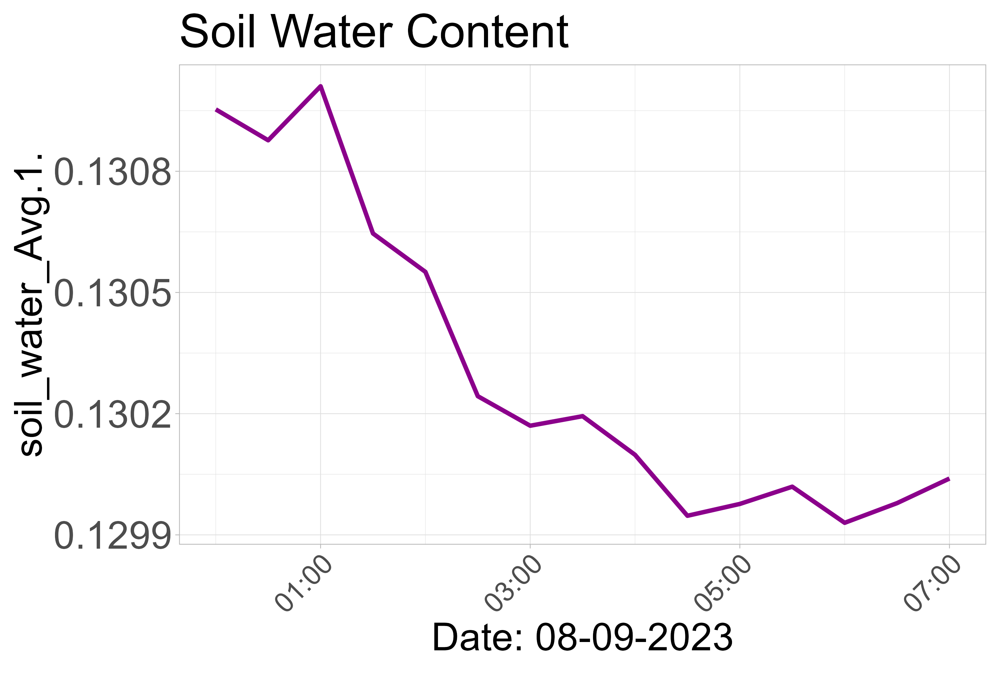
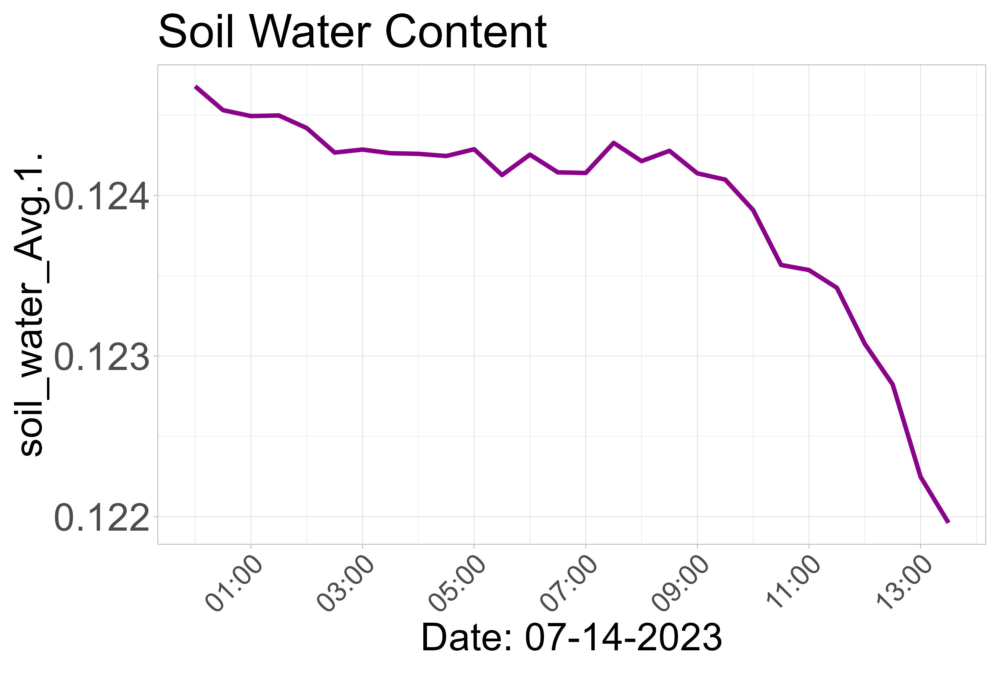

<div style='display:flex; justify-content: space-between;'>
<div style='width: 50%; text-align: center;'>
<h2>Yesterday</h2>
<div style='text-align:center; max-width:500px; margin:auto;'><h3>Soil Water Content</h3>
<a href="../daily_plots/fluxtower4_soil_water_Avg.1._yesterday.png" target="_blank">
</a><div style="border:1px solid black; background-color: #003366; padding:10px; color: white;">
Min: 0.11, Max: 0.11, Avg: 0.11
</div>
<hr style="border-top: 1px solid #ddd;"></div></div>
<div style='width: 50%; text-align: center;'>
<h2>Today</h2>
<div style='text-align:center; max-width:500px; margin:auto;'><h3>Soil Water Content</h3>
<a href="../daily_plots/fluxtower4_soil_water_Avg.1._today.png" target="_blank">
</a><div style="border:1px solid black; background-color: #003366; padding:10px; color: white;">
Min: 0.11, Max: 0.13, Avg: 0.12
</div>
<hr style="border-top: 1px solid #ddd;"></div></div></div>
